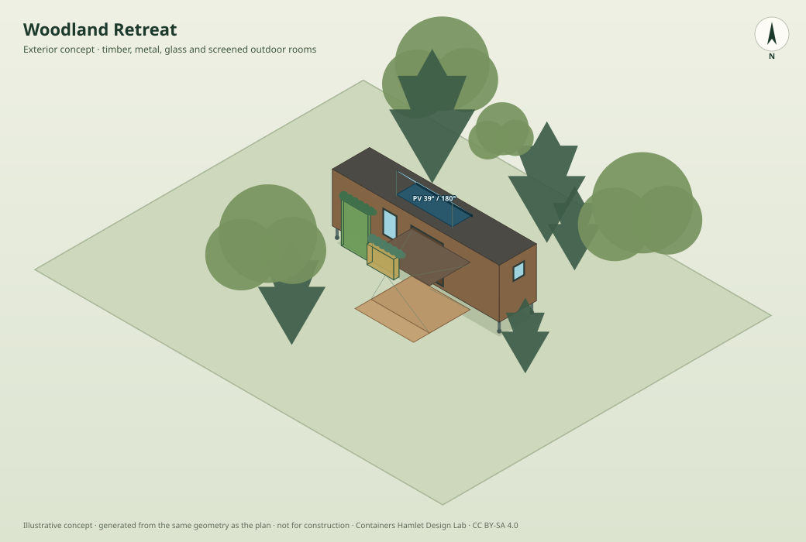
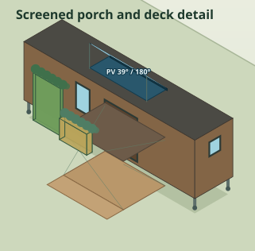
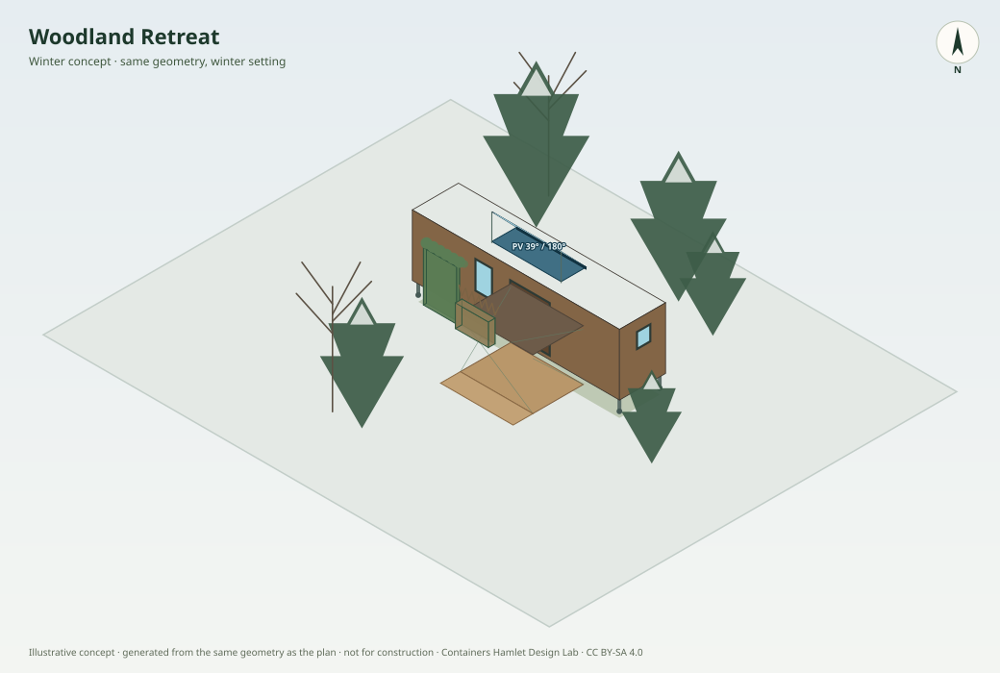

One 40-foot high-cube container holds a sleeping room, bath, kitchen and living space. A generous screened porch and a small deck extend the living area into the forest. The long side faces the view; the entry and path stay behind.
Editable concept.
Five views
View 1 of 5: Exterior architectural view

Illustrative studyExterior architectural view An exterior concept of Woodland Retreat. The timber-clad containers and 4.4 × 3.1 m screened porch are set against the woodland.Geometry-backed drawingDimensioned concept floor plan Dimensioned concept plan with 1 container module, interior room bands, openings, 4.4 × 3.1 m screened porch, deck and primary view.Geometry-backed drawingInterior roof-off cutaway Roof-off cutaway through the same geometry, showing the room bands, structural openings and the relationship to the outdoor rooms.

Geometry-backed drawingScreened porch or deck view A cropped porch and deck detail from the same model. It shows the screened or covered outdoor room, deck projection and the adjacent container face.

Illustrative studyWinter exterior view A winter study of the same building geometry, with snow, bare deciduous trees and a low, cool light. It is an atmospheric study, not a snow-load calculation.
The five views share one model. The plan, cutaway and porch detail are geometry-backed drawings; the exterior and winter images are illustrative studies. No slide advances automatically.
Concept facts
Containers
1 × 40ft
Nominal conditioned area
29.7 m² (modules plus glazed hall)
Screened / covered outdoor
4.4 × 3.1 m screened
Glazing intent
10.2 m² approximate glazed area
Thermal envelope
triple glazed, low-e, argon, thermally broken frames; 250 mm roof; 200 mm floor; HRV/ERV
Accessibility
Step-free porch route is intended; bathroom and sleeping turning space need redesign.